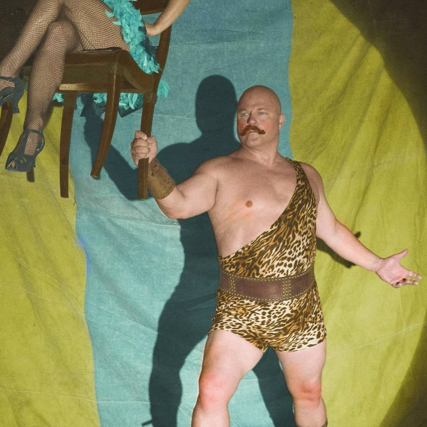
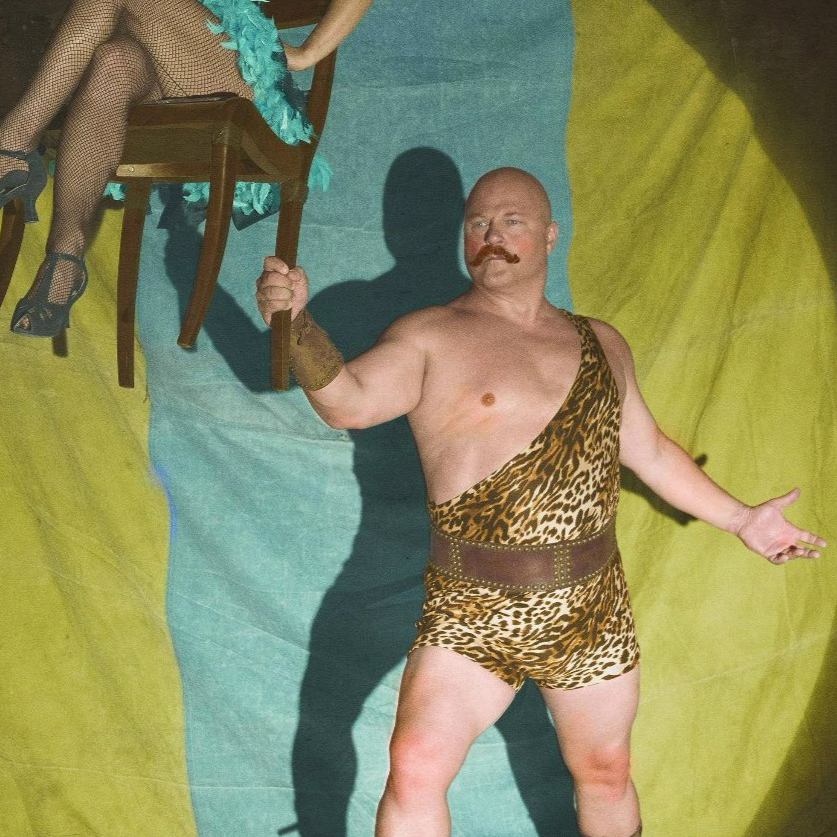
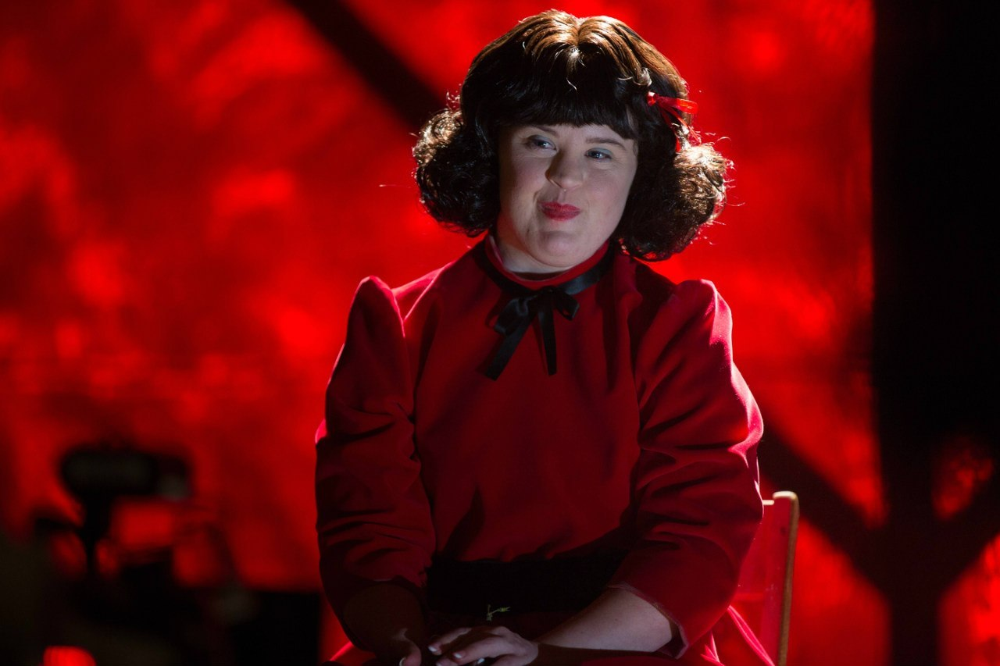

Актори
- Сара Полсон — Бетт і Дот Теттлер — сіамські близьнюки
- Еван Пітерс — Джиммі Дарлінг — людина-лобстер
- Майкл Чикліс — Венделл дель Толедо — силач
- Френсіс Конрой — Глорія Мотт
- Деніс О’Харе — Стенлі
- Емма Робертс — Меггі / Есмеральда — ворожка-шахрайка
- Фінн Віттрок — Денді Мотт
- Анджела Бассетт — Дезіре Дюпрі — тригруда жінка
- Кеті Бейтс — Етель Дарлінг — бородата жінка
- Джессіка Ленг — Ельза Марс — хазяйка шоу фріків
 

ЕпIзоди
S4E1: «Монстри серед нас»
Один із мандрівних цирків, який ще продовжує діяльність намагається триматись на плаву, але увагу людей все більше забирає телебачення. Знахідка поліції на одній з ферм може дати шанс цьому цирку перезавантажитись або остаточно припинить його діяльність. Це з’єднані близнючки Бетт і Дот, яких знайшов молочник пораненими в будинку біля їх жорстоко вбитої матері. Хазяйка шоу виродків, Ельза Марс знаходить дівчат і намагається вмовити їх приєднатись до цирку. Паралельно з цим, клоун Твісті починає серію вбивст мешканців містечка.
S4E2: «Вбивства та вистави»
Шоу виродків на межі закриття. Через вбивства запроваджують комендантську годину. Силач Толедо з тригрудою дружиною Дезіре прибуває до цирку і просить про роботу. Ельза робить його відповідальним за безпеку в цирку. Глорія організовує персональне шоу виродків для Денді. Він у захваті від близнючок Теттлер і хоче їх купити. Поліція намагається знайти зачіпки у цирку, які допоможуть знайти вбивцю місцевих.
S4E3: «Едвард Мордрейк (частина 1)»
У шоу приходить нова людина — Меггі/Есмеральда, яка є нібито ворожкою. Вона працює з Стенлі, який хоче продати когось з виродків до Музею хворобливих курйозів. Вона має допомогти йому з цим. У Етель виявляють цироз печінки. Денді слідкує за клоуном-вбивцею Твісті і наслідує його. Фріки відмовляються робити виставу через Хелловін. У їх середовищі це погана прикмета, яка стосується Едварда Мордрейка. Ельза порушує прикмету, виступивши з піснею на сцені, і він приходить для того, щоб забрати душу одного з виродків.
S4E4: «Едвард Мордрейк (частина 2)»
Едвард Мордрейк шукає жертву для своєї групи привидів. Він дізнається історії бородатої жінки Етель, жінки без ніг Сюзі, чоловіка-тюленя Пола та Ельзи, яка втратила свої ноги будучи елітною куртизанкою в Німеччині. Джиммі і Меггі натрапляють на трейлер клоуна Твісті. Він хоче вбити своїх заручників, але парочці вдається цьому завадити. Мордрейк приходить почути історію клоуна, і вирішує, що він і є його жертвою. Денді забирає собі жахаючу маску Твісті і вирішує, що продовжить його справу. Місто заспокоююється смертю клоуна і повертається до звичного життя. Люди з вдячності Джиммі за порятунок дітей приходять на шоу. Сюди заявився і Стенлі, представившись голлівудським агентом, щоб задурманити розум Ельзі і отримати можливість вбити когось з фріків, щоб передати музею.
S4E5: «Рожевi кекси»
Стенлі розповідає Меггі план з вбивства фріків, і разом з тим вербує Ельзу, розповідаючи про її власне шоу на телебаченнію. Дезіре, яка все життя вважала себе гермафродитом дізнається, що повністю жінка. У неї сталась кровотеча, після чого Етель привела її до лікаря. Він сказав, що це був викидень. Глорія дізнається про вбивства свого сина Денді, але покриває його. Ельза все більше бачить у близнючках конкуренток, які її затьмарюють, тому вирішує обманом продати їх Глорії.
S4E6: «В яблучко»
Ельза думає над новим номером для свого шоу на телебаченні і вирішує згадати як колись метала ножі в колесо, яка обертається. Напередодні її дня народження вона дізнається, що серед фріків ширяться чутки про її причетність до зникнення Бетт і Дот. Ельза у гніві нагадує, що кожного присутнього вона врятувала від жаху, а тому вони всі мають бути їй вдячні і довіряти їй. Щоб побачити чи їй довіряють вона вимагає, щоб хтось заліз на колесо, а вона буде продовжувати кидати туди ножі. Неохоче, але добровільно на колесо йде Пол і Ельза цілеспрямовано його ранить та не викликає швидку допомогу. Дот дізнається про першу операцію з розділення тіл близнюків і надіється, що для них з сестрою Денді теж зробить таку операцію. Стенлі все більше тисне на Меггі, яка має допомгти йому вбити когось з фріків.
S4E7: «Тест на мiцнiсть»
Близнючки йдуть від Денді. Пенні йде до батька, щоб сказати про наміри жити з Полом. Він лютий через рішення доньки бути з фріком і вирішує їй помститись. Для цього наймає татуювальника, який наносить Пенні тату на все обличчя і голову, а також роздвоює язик. Стенлі бачить силача в гей-барі і погрожує викрити його секрет, якщо той не принесе йому тіло когось з фріків. Його жертвою стає Ма Петіт. Стенлі доставляє її тіло на виставку у Музей.
S4E8: «Кривава ванна»
Група шукає Ма Петіт, і знайшовши її сукню в крові вирішує, що на неї напали дикі звірі. Але Етель у загибелі звинувачує Ельзу, вона погрожує їй пістолетом за усю брехню і зради. Але Ельза кидає ножем і вбиває Етель першою. Стенлі допомагає підробити це під самогубство Етель. Група сумує, а Джиммі починає пиячити. Він відштовхує Меггі і починає розважатись з новою персоною в шоу — хворобливо ожирілою дівчиною зі сценічною кличкою Іма Вігглз. Глорія намагається лікувати сина, записавши його до терапевта, але коли він дізнається про її справжні наміри, то вирішує вбити матір. Він купається у ванні в її крові, відчуваючи при цьому як наповнюється новою енергією.
S4E9: «Рiзанина на вечiрцi Таппервер»
Денді відчуває гніт через вбивство матері. Він йде до Меггі погадати. Вона запевняє, що зараз час труднощів, але він зможе їх подолати, що підштовхує Денді продовжувати вбивства. Дорогою до машини його зустрічає Джиммі, який через алкоголь поводить себе дуже агресивно, тому привселюдно звинувачує Денді у причетності до зникнення близнючок. Силач Делл вирішує повіситись, бо відчуває провину за скоєне, але його рятує Дезіре. Джиммі кличуть на вечірку Таппервер, але він зловживає алкоголем, тому жінки відправляють його додому. Як тільки хлопець залишає будинок приходить Денді і усіх вбиває. Дот і Бетт зізнаються у коханні Джиммі, але він каже, що закоханий у іншу. До цирку приїжджає поліція і заарештовує Джиммі за вбивство жінок на вечірці Таппервер.

S4E10: «Сироти»
Солті, чоловік Пеппер помирає уві сні. Дезіре створює навколо себе свою групу. Дезіре пропонує Пеппер повернутись до старшої сестри. Стенлі говорить Ельзі, що догляне за тілом Солті і кремує його, але натомість відрубує голову і передає в Музей. Меггі і Дезіре опиняються в музеї і з жахом знаходять там тіло Ма Петіт, голову Солті і руки Джиммі. Ельза знаходить сестру Пеппер Риту і переконує її забрати Пеппер. Через дев'ять років Рита народжує деформованого малюка і її чоловік пропонує звинуватити Пеппер у вбивстві малюка. Пеппер забирають до Бріаркліфу, де сестра Мері Юніс бере її помічницею у бібліотеку для сортування журналів. Там Пеппер знаходить журнал з Ельзою на обкладинці.
S4E11: «Магiчне мислення»
Стенлі запевняє Джиммі, що єдиний спосіб оплатити адвоката це продати руку на чорному ринку. Цим обманом Джиммі залишається без обох рук. Бетт і Дот знайомляться з мандрівним торгівцем Честером, а пізніше спокушають його. Єва і Делл рятують Джиммі, коли його транспортують з лікарні назад в в'язницю. Меггі розповідає Ельзі про справжню причину смерті Ма Петіт. Делл зізнається у злочині Дезіре і Ельза його вбиває.
S4E12: «Шоу талантiв»
Меггі звинувачує Стенлі у вбивствах. Стенлі благає групу не вбивати його і говорить, що Етель вбила Ельза. Ельза знайомить Джиммі з Массімо Дольчефіно, який робить йому нові дерев’яні руки. Честер вбиває Меггі. Близнючки попереджають Ельзу про розправу за вбивство Етель і кажуть їй тікати. Ельза продає своє шоу виродків Денді і їде з міста.
S4E13: «Завiса»
Через лють денді вбиває усіх фріків. Джиммі знаходить живою лише Дезіре. Дот і Бетті погоджуються на шлюб з Денді. За вечерею Джиммі підсипають наркотики. Він просинається у китайській камері водних катувань Гардіна Гудіні. За ним спостерігають Дезіре, Джиммі, Бетт і Дот. Ельза, тим часом, приїжджає в Голлівуд і зустрічається з Майклом Беком. Вона стає знаменитою. Але потім все починає руйнуватись і вона вирішує виступити на Хелловін, знаючи що за нею прийде Едвард Мордрейк. Під час виступу трансляцію дивляться Дезіре разом з вагітною Бетт і Дот, які щасливо вийшли заміж за Джиммі.